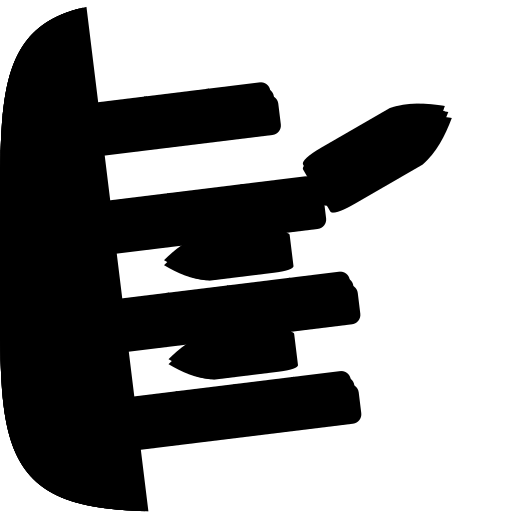
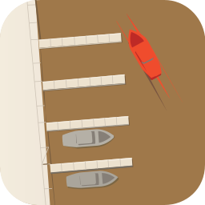
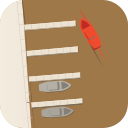
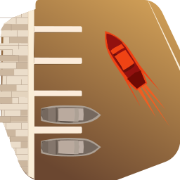
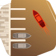

icon.svg. Four finger piers off a bleeding shore, two vessels held in their berths, one ember vessel past the pier heads with its wake running back into the slip it vacated.
| Take | Renders at 128 / 64 / 48 / 32 / 16 css px (2× retina sources), plus the 16px squint magnified | Rubric | Verdict |
|---|---|---|---|
| A · icon.svgEngine A — hand-authored layered SVG, closed against C1 — SHIPS | 11 / 12 | Checks 1–4 clean on real renders. Full-bleed 1024 with the set’s squircle as a clip, no baked corner or shadow (#1). The filled-black silhouette is nameable (#3), and at 16px the icon sheds coursing, bollards and foam to four pale stepped bars plus one ember dash — identity intact, no smear (#4). One key light on a single axis carries every ramp (#5); two hue families, vermilion reserved strictly for the departing vessel (#6). Focal against its local water measures 2.18:1 at 1024 and 2.17:1 at 32px (#7). Four real layers bg/mid/fg/highlight with identity in fg’s filled shapes (#10). Deducted at #7: nothing here reaches the 3:1 bar against the basin — the focal is 2.18:1 and the berthed pair 2.32:1. Both are in family (the sibling create-mac-icon measures 1.96:1 and the winning raster 2.28:1 by the same ring measure), and the berthed craft clear 3.14:1 against the pier stone that frames them, but the bar is the bar. |
|
| A0 · icon-A0-predraft.pngEngine A before the fidelity loop — kept to show what the rounds bought | 10 / 12 | Same composition, same layer plan, materially thinner — and it is the honest baseline the loop is measured against. Bollards were flat two-circle decals that read as paint on the pier rather than mouldings standing proud of it, the stone had no coursing so the slabs read as cut paper, and the wake was one tapered band that reads as a smear rather than a vessel moving. The gel ramp lost chroma into shadow (darkest S 0.80 / V 0.59) so the hull read as opaque paint. Loses #8 on the decal bollards and #7 with A. | |
| B · icon-engineB-arrow-e5f2b5.svgEngine B — Arrow 1.1 vector, from the spec as brief |   |
5 / 12 | Hard-fails #1: it baked its own rounded-corner ground, so a cream field sits outside a self-made mask — unusable at any size. It also drew the wake in the accent as red diagonal streaks, putting the one reserved colour on something that is not the focal (#6, #11), and the basin came back an opaque mid-brown far outside the porcelain register. At 32px the berthed craft dissolve into the water entirely (#4). Salvaged into the master: nothing geometric — but it independently arrived at the same plan (shore left, staggered piers right, one vessel out on a diagonal), which was useful confirmation that the composition reads without the author’s knowledge of what it is meant to be. |
| B0 · icon-engineB-arrow-3ea7ec.svgEngine B — Arrow 1.1, first attempt (long brief) |   |
3 / 12 | The worst take of the six, kept because it shows the failure mode the brief was rewritten to avoid. The tool call reported a timeout and the file landed anyway. Hard-fails #1 twice over: it baked a corner mask and cut its ground into a folded parallelogram that leaves bare canvas in two corners, so the dominant silhouette is the artwork's own boundary rather than the harbour (#3). Ground is a golden-brown gradient nowhere near the porcelain register (#6, #9), the wake is again drawn in the reserved accent as red streaks (#6, #11), and the berthed craft carry a hard grey keyline that reads as an outline sticker (#8). At 32px it is a brown tile with a red mark. |
| C1 · icon-engineC-78c359.pngEngine C — GPT Image 2, three corpus/family references — MATERIAL TARGET | 8 / 12 | Wins the material judgment outright and takes #5, #8 and #11: slab coursing on the stone, bollards as real mouldings with their own cast shadows, a fan of fine foam streaks astern, and a gel whose darkest pixel holds S 0.98 / V 0.78. All four were rebuilt into the master. Not shippable: a flat pre-masked raster with no layers is failure mode #10 and cannot pass #1. And its own composition is the trap this commission started in — a single quay bar with three equal piers reads at 32px as a literal letter E, which is why the master bleeds its shore off three edges instead (#3). Its berthed craft also dissolve at 32px, where the master’s survive. | |
| C2 · icon-engineC-603382-2.pngEngine C — GPT Image 2, second take | 7 / 12 | The same material strengths as C1 and a worse read. Its berthed craft are near-white on a near-white basin — a tone-on-tone silhouette collapse (#7) that is total by 32px, where only the ember and two pier bars survive (#4). The quay runs in perspective off the top-left, which pushes the whole harbour into the left third and leaves the right half of the tile empty (#2). Lost to C1 on the material comparison as well: cooler, greyer, less coursing. Nothing was salvaged from it. |
| Round | Edit class | Composite (1024 / 256 / 128 / 32 / 16) | Mean | Gate |
|---|---|---|---|---|
| r00 | baseline | 0.4467 · 0.4230 · 0.4062 · 0.6678 · 0.6944 | 0.5276 | — |
| r01 | material — slab coursing, mouldings, deeper wall ramp | 0.4440 · 0.4237 · 0.4132 · 0.6704 · 0.6987 | 0.5300 | ACCEPT +0.0119 |
| r02 | material — wake rebuilt as a diverging foam fan | 0.4445 · 0.4248 · 0.4133 · 0.6703 · 0.6987 | 0.5303 | ACCEPT +0.0016 |
| r03 | detail — gel ramp re-measured, well bounce, warm lit-edge rim | 0.4456 · 0.4272 · 0.4156 · 0.6702 · 0.6995 | 0.5316 | ACCEPT +0.0065 |
| r04 | material — broad water sheen + clay re-hued warm | 0.4451 · 0.4257 · 0.4138 · 0.6685 · 0.6929 | 0.5292 | REJECT −0.0121 |
| r05 | same, clay reverted — isolates the sheen as the cause | 0.4453 · 0.4263 · 0.4136 · 0.6687 · 0.6928 | 0.5293 | REJECT −0.0114 |
| r06 | r03 restored — best-ever checkpoint, not the latest | 0.4456 · 0.4272 · 0.4156 · 0.6702 · 0.6995 | 0.5316 | restored |
| r07 | small-size repair — focal enlarged 12% after the sibling-shelf check | 0.4431 · 0.4240 · 0.4127 · 0.6721 · 0.6985 | 0.5301 | ACCEPT (self-contrast up at all five sizes) |
| r08 | figure-ground — basin lightened after a ring measure of the focal | 0.4532 · 0.4388 · 0.4329 · 0.6881 · 0.7174 | 0.5461 | REJECT (32px floor) — overridden, ships |
Two consecutive rejections (r04, r05) ended the first pass. r05 exists because r04 changed two things at once; splitting them showed the water sheen, not the clay re-hue, was what cost the composite. The loop reopened only because two checks outside the gate said to: the sibling-shelf comparison (r07) — the master at 32px beside the five icons it will actually sit next to, where its ember mark was the weakest on the shelf — and a ring measure of the focal against its own surround (r08), which put figure-ground at 1.85:1 where a hand-placed sample had read 3.10:1. That correction is the reason r08 exists at all.
Why r08 ships against its gate. It gained +0.0800 of composite — by far the largest move of the run — and was rejected on one term: whole-image self-contrast at 32px fell 0.338 to 0.309. That statistic is a p90−p10 spread dominated by the tile ground, and lightening the basin compressed the ground toward the stone laid over it. Measured at the size the floor fired on, the thing the floor is protecting went the other way: the focal’s contrast against its own surround rose 1.93 → 2.17:1 at 32px and 1.87 → 1.97:1 at 16px, on an identical 37-pixel footprint. The berthed pair rose 2.07 → 2.32:1. The loop’s own reference names this blind spot — the floor catches gross collapse, not what a ground does relative to its objects — and the ordering is gate < rubric. Rejected sources are kept in runs/ as rNN-candidate.svg; net gain over the r00 baseline is +0.0185 mean composite.
bg cushion and basin, mid berth structure, fg vessels, highlight lit lips and rim — so it survives Dark / Clear / Tinted where both rasters fail #10 by delivery format. Checks 1–4 were verified on the renders above and on the filled-black silhouette, not from memory. Its material provenance is C1: the slab coursing, the three-dimensional bollards, the diverging foam fan and the gel ramp (whose darkest stop now holds S 0.94 / V 0.80 against the reference’s S 0.98 / V 0.78) were all measured off that raster and rebuilt as layered SVG constructions. Known liabilities to revisit: (1) no element reaches the 3:1 figure-ground bar against the basin — focal 2.18:1, berthed pair 2.32:1, pier stone 1.36:1 — and r08 established that the basin’s depth trades the vessels against the piers rather than lifting both, so a real fix means a local edit (shading the slips while leaving the open water bright), not another global one; (2) in filled black the berthed craft merge into the piers they lie between, so the silhouette names the harbour and the departing vessel but not the held fleet; (3) the composition runs 67.2% of tile width excluding the deliberate edge-bleed shore, marginally over the 55–65% constant — the cost of a scene rather than a single object; (4) the ground is a warm sand basin rather than the vellum plate the sibling icons float their objects on, so the dark system variant is the one to check first on any revision.python3 audit_sheet.py render . (1024 / 256 / 128 / 96 / 64 / 32 sources); verified by its check subcommand. Fidelity numbers from fidelity.py, metric tier: numpy (luminance + SSIM + edge F1 + mask IoU; no LPIPS on this machine).
audit-renders/render-manifest.json records take A against icon.svg, and re-rendering A from the shipped master reproduces icon.png and icon-256.png byte for byte, so the sheet and the delivery are provably the same artifact. silhouette.png is a 512px render of the mid and fg layers flattened to black, regenerable in place with python3 silhouette.py. The A0, B, B0, C1 and C2 renders are frozen history: their sources (icon-A0-predraft.png, icon-engineB-arrow-e5f2b5.svg, icon-engineB-arrow-3ea7ec.svg, icon-engineC-78c359.png, icon-engineC-603382-2.png) and the runs/ directory behind the fidelity numbers live in the commission workspace, which is deliberately outside the repo, so those five rows are not machine-checkable from this directory and are recorded here as evidence rather than as reproducible renders.